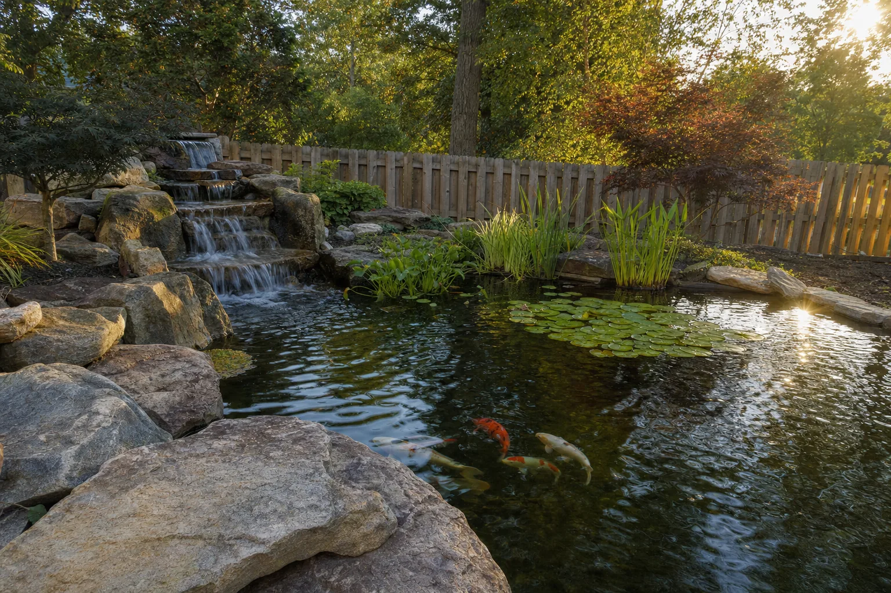
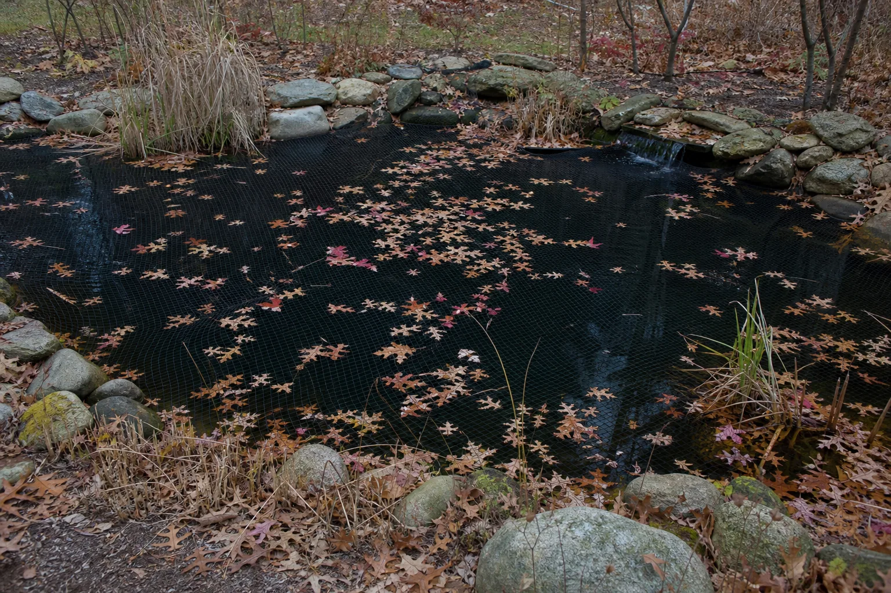

Leak detection, liner and pump repair, cleanouts and rebuilds for backyard ponds across western Northern Virginia.

Usually a liner tear, a settled edge, or a leak in the plumbing. We find where the water is actually going before quoting the repair, because those three cost very different amounts and guessing is how people end up paying for a new liner they did not need.
Green water is a filtration and balance problem rather than a dirt problem. A cleanout resets it in a day. Why it went green in the first place decides whether it comes back next summer.
Pump service, pump replacement, or a blockage somewhere in the line. If you can find the model number on the pump housing, read it to us over the phone and we can often tell you which one it is before we come out.
We will walk it with you and tell you what you actually own, what it costs to run, and give you a straight answer about whether to keep it, rebuild it, or fill it in. Not every inherited pond is worth saving and we will say so.
Water quality, oxygen, or a filter that quietly stopped working. Fish trouble is the one thing here that is time-sensitive, so call rather than email.
One company actually disposed of all of my fish, I will not mention any names. Thanks Bella’s Pond for doing such an awesome job.
From a customer review on Yelp

Net the pond before the leaves drop. A net over the water in September is the difference between a rinse in November and a full cleanout, and it is the cheapest thing you will do for the pond all year.
Autumn service books out first. Call before the maples turn.
Most repairs can be quoted from pictures. Take one of the whole pond, one of the waterfall or filter box, and one close-up of wherever you think the water is going. We will tell you what we think it is before anyone drives out.
Email the photosAn unsolicited design concept for Bella's Pond Services LLC, prepared by Ohtari Labs. This is not their website.